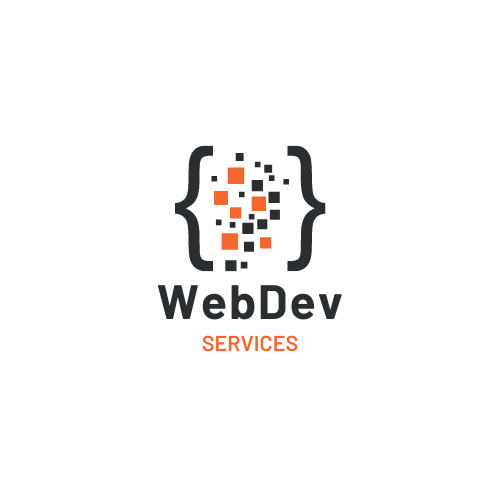
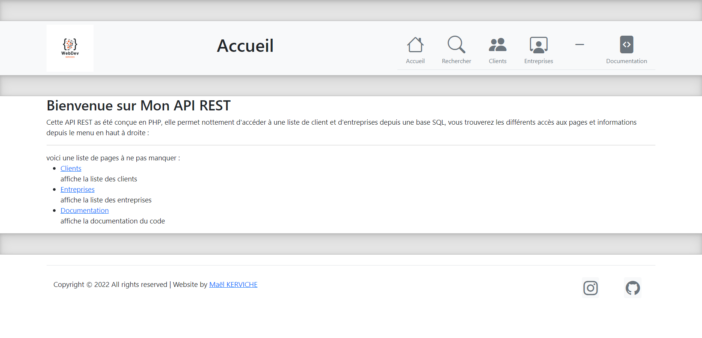
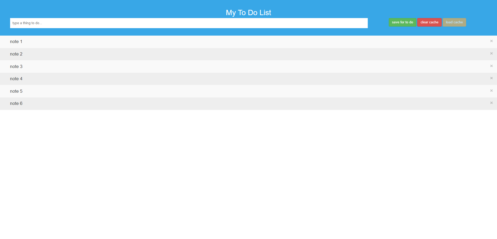
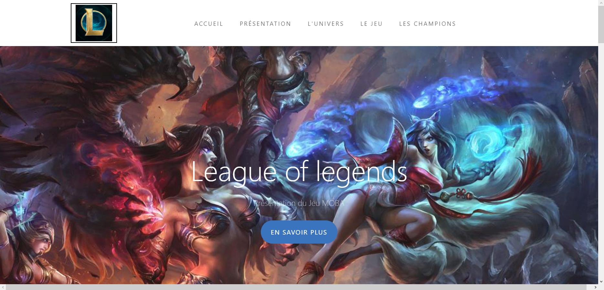
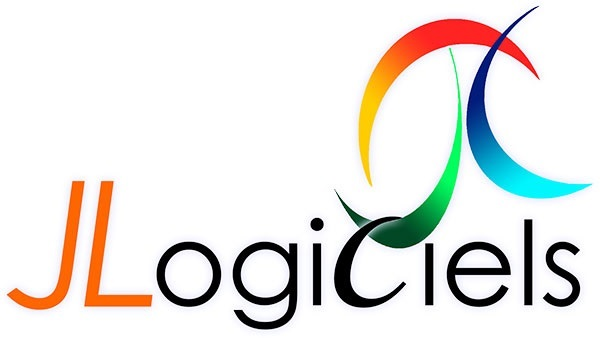
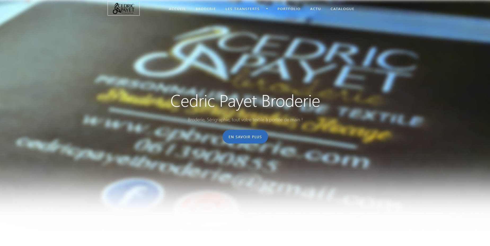

- Avatar:
-
- Fullname:
- Account:
- Repos
- Followers

Bachelor Concepteur de systèmes d'Informations, je suis actuellement cette formation en alternance
dans le but de développer mes compétences professionneles et renforcer mes connaissances techniques dans le secteur du développement et de la gestion de projet.
Cette formation est suivie en parrallèle de l'alternance chez JLogiciels

Projet Fevrier 2022 Projet
Découverte du projet de groupe WebDevServices : application de gestion de clients avec serveur dédiés.
Le projet met en valeur l'ensemble des compétences acquises lors de
la formation, autant du coté réseau avec la conception et le paramétrage du serveur, que pour le coté application avec le développement de l'interface utilisateur et la base
de données.

Site PHP, API PHP Janvier 2022 Web
Conception d'une API REST en php avec Base de données MySQL

Site HTML Novembre 2021 Web
Création d'une "TODO list", un site web application permettant d'enregistrer des notes (TODO) et de les afficher dans un tableau

Site HTML Octobre 2021 Web
Création d'une "Single Page Application", un site web statique sur une seule page. Fait partie de l'harmonisation web (remise à niveau)
Brevet de technicien supérieur : Service Informatique aux organisation. Diplôme obtenu fin 2021, j'ai suivi cette formation dans le but d'apprendre le métier de développeur, la gestion de projets, la gestion de base de données, ... L'ensemble de ces compétences furent l'objet de projets réalisés seuls ou à plusieurs sur différents sujet et avec différentes technologies utilisées

Application C# GSB Mars 2020 Web, Objet, SQL
Extension du projet 4 et du projet 5, création de services Web C# utilisés sur un site PHP. Le service web permet l'afficha


Application Android GSB Decembre 2020 Objet, SQLite
Extension du projet 4, développement d'une application Android permettant la prise de rendez-vous avec les professionnels enregistrés dans la base de données

Application C# GSB Septembre 2020 Objet, SQL
Conception d'une application C# de gestion de SI avec formulaire de connexion, gestion de tickets et gestion des utilisateurs. Le logiciel établis une connexion à une base de données MySQL

Application C# Mars 2020 Objet
Développement orienté objet d'un jeu avec possibilité de l'installer sur une machine étrangère

Forum PHP avec base MySQL Decembre 2020 Web
Conception d'un forum accessible par connexion utilisateur. Le forum permet de poster des commentaires sur différents sujets.

Site HTMl Septembre 2019 Web
Création d'un site statique en HTML avec utilisation de feuilles de styles en cascade CSS et de la librairie Bootstrap.
Dans le cadre de certaines formations, des alternances en entreprises sont effectuées.

Logiciel SaaS 2021 - 2022 Web
Alternance en entreprise chez JLogiciels : participation aux différents projets de l'entreprise, maintien du SAV, maintenance technique.
Cette alternance est suivie en parrallèle de la formation Bachelor CSI
Dans le cadre de certaines formations, des stages en entreprises sont effectuées

Site Boutique Janvier 2021 Web
Stage en entreprise chez Cédric Payet Broderie : refonte du processus de commande, de la boutique et ajout de nouvelles fonctionnalités